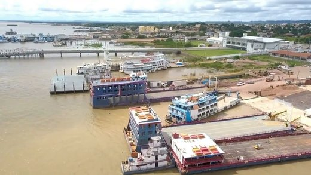

00:00:28.800
Vista aérea de cais e rampas com várias embarcações, ao lado da área urbana de Santarém.
Porto de Santarém (PA) · confirmado
A abertura apresenta o transporte fluvial como parte da logística de passageiros, cargas e produção agrícola entre cidades amazônicas.
Transcrição · 00:00:16 | 00:00:24 | 00:00:32 | 00:00:40
Turismo Aqui — quadro de vídeo publicado no YouTube